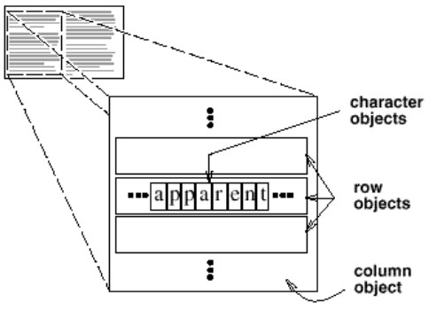
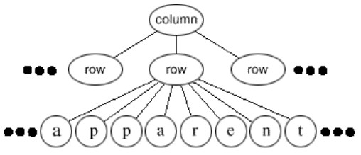
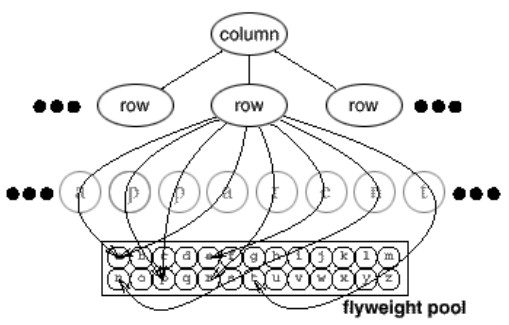
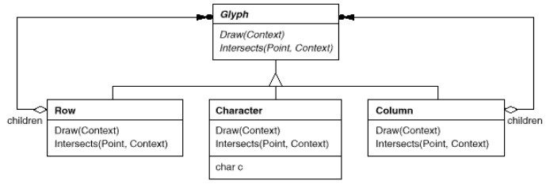
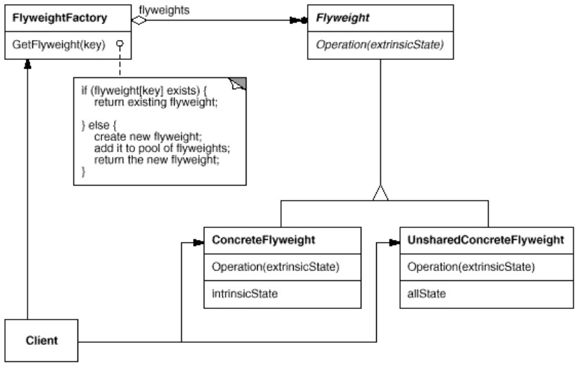
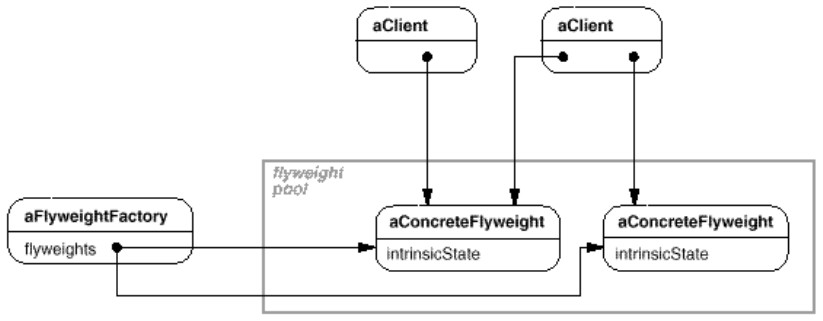
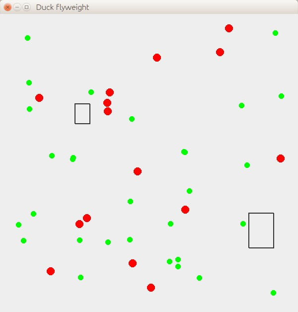

But : Utiliser le partage pour gérer un grand nombre d'objets.
Par exemple un éditeur de texte utilise des objets pour représenter les éléments inclus dans un texte, comme les tables et les figures.
Mais gérer chaque caractère comme un objet coûte trop cher en mémoire et temps d'exécution.  Le pattern Flyweight décrit comment partager les objets.
Un flyweight est un objet partagé qui peut être utilisé dans plusieurs contextes simultanément.
Un flyweight agit comme un objet indépendant dans chaque contexte, il ne peut être distingué d'un objet normal.
Mais il ne connaît pas son contexte, s'il doit l'utliser dans ses opérations, le client doit le passer en paramètre.
Le pattern repose sur la distinction entre état intrinsèque et état extrinsèque de l'objet.
-
L'état intrinsèque est stocké dans l'objet flyweight ; est composé d'informations indépendantes de son contexte.
Dans l'exemple du traitement de texte, l'état intrinsèque d'un caractère est son code. -
L'état extrinsèque dépend du contexte et ne peut pas être partagé.
Le client a la responsabilité de passer au flyweight les informations extrinsèques lorsque le flyweight en a besoin.
Dans l'exemple, les autres informations, comme sa position dans le texte, ses décorations gras, souligné... sont extrinsèques.
Structure logique : on a un objet par caractère.
Structure physique : chaque occurence d'un même caractère pointe vers le même objet flyweight.


Certains objets sont flyweight, d'autres non.
Le client ne sait pas s'il a à faire à un objet concret ou un flyweight : 
Lorsqu'une opération sur un flyweight est effectuée, l'application passe en paramètre les informations nécessaires (état externe, non stockable par les objets fictifs).
Création
En pratique, le client utilise une factory pour construire les flyweights.La factory gère un pool d'objets.
Le client passe par la factory pour créer et utiliser les flyweights.
Structure
 Deux point importants :-
Une abstraction,
Flyweight, qui permet de traiter de la même manière objets partagés ("ConcreteFlyweight") et objets non-partagés ("UnsharedConcreteFlyweight").
A l'utilisation, le client ne sait pas si l'objet qu'il utilse est partagé ou pas. -
FlyweightFactory
- Rend opaque au client la création des objets.
- Gère le partage des objets (pool).
Diagramme objet montrant comment les flyweights sont partagés : 
Exemples
Représenter les canards
Scénario : Le quackologist de l'exemple Head First veut pouvoir représenter sur une carte la position des canards.Il est aussi demandé de représenter les huttes situées dans le parc.

java Main creating Hut creating Hut creating MallardDuck creating RedheadDuck
Comme il y a des milliers de canards, créer un objet par canard coûterait trop cher, on utilise donc Flyweight ("ConcreteFlyweight").
Les huttes ne sont pas nombreuses, donc on peut créer un objet par hutte ("UnsharedConcreteFlyweight").
Les canards sont représentés par un cercle, les huttes par un rectangle.
On gère 2 espèces de canards (mallard et redhead)
Pour chaque espèce de canard, son état intrinsèque est la couleur et la taille du cercle ; son état extrinsèque est sa position sur la carte.
Le client (
Main) ne sait pas si les objets qu'il utilise sont partagés ou pas.
Cela est rendu possible par une interface,
Drawable, et par la classe DrawableFactory.
draw() prend en paramètre l'état extrinsèque des objets, gérés par le client (x et y).
Dans
Hut, l'état intrinsèque (w, h) est stocké dans des variables d'instance.
Dans les classes de canard, l'état intrinsèque est partagé.
public interface Drawable{
public void draw(Graphics g, int x, int y);
}
public class Hut implements Drawable{
private int w, h; // width, height
public Hut(int w, int h){
this.w = w;
this.h = h;
System.out.println("creating Hut");
}
public void draw(Graphics g, int x, int y){
g.drawRect(x, y, w, h);
g.drawRect(x+1, y+1, w, h);
}
}
public class RedheadDuck implements Drawable{
// état intrinsèque, commun à tous les canards de cette espèce
private static Color color = Color.RED;
private static int radius = 15; // rayon du cercle représentant cette espèce
public RedheadDuck(){
System.out.println("creating RedheadDuck");
}
public void draw(Graphics g, int x, int y){
g.setColor(color);
g.drawOval(x, y, radius, radius);
g.fillOval(x, y, radius, radius);
}
}
public class DrawableFactory{
// Pool d'objets qui vont être partagés
private static MallardDuck mallard;
private static RedheadDuck redhead;
public static Drawable getHut(int w, int h){
return new Hut(w, h);
}
public static Drawable getMallardDuck(){
if(mallard == null){
mallard = new MallardDuck();
}
return mallard;
}
public static Drawable getRedheadDuck(){
if(redhead == null){
redhead = new RedheadDuck();
}
return redhead;
}
}
public class Main {
static List<Drawable> drawables = new ArrayList<Drawable>();
// ...
public static void main(String[] args) {
drawables.add(DrawableFactory.getHut(50, 70));
drawables.add(DrawableFactory.getMallardDuck());
}
}
Boutons sourcemaking
Exercice :
- Récupérez la copie locale de l'exemple 2 de https://sourcemaking.com/design_patterns/flyweight.
- Complétez le pour le faire compiler et exécuter.
- Modifiez le code pour supprimer les warnings à la compilation.
- Identifiez de quelle manière est implémenté (ou pas) le pattern flyweight.
- Récupérez la copie locale de l'exemple 2 de https://sourcemaking.com/design_patterns/flyweight.
- Complétez le pour le faire compiler et exécuter.
- Modifiez le code pour supprimer les warnings à la compilation.
- Identifiez de quelle manière est implémenté (ou pas) le pattern flyweight.